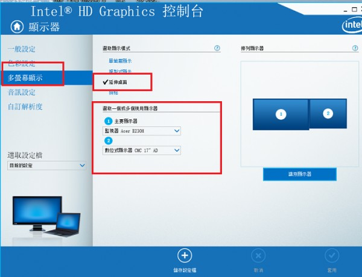

備餐畫面仍停留在第一螢幕
1 個回答
您好
1.主控螢幕(可觸控的)應該要設為主顯示器,延伸螢幕不要設為主顯示器,
理論上只要設成這樣就可以正常使用,和識別一二沒多大關係,
站長測過多台都是如此,取消延伸螢幕工作列的目的是避免造成混淆,第二 延伸螢幕最好不要有工作列
2.識別的一二問題跟顯示卡的螢幕輸出接口有關,通常HDMI輸出為第一螢幕,Dsub輸出為第二螢幕,可以的話可將兩個接頭對調,如果沒辦法對調,那必須調整顯示卡驅動程式的參數,但每張顯示卡廠牌不同,驅動程式的畫面也不一樣 ,但設定方法大多類似
以下是Intel的顯卡的設定舉例說明
